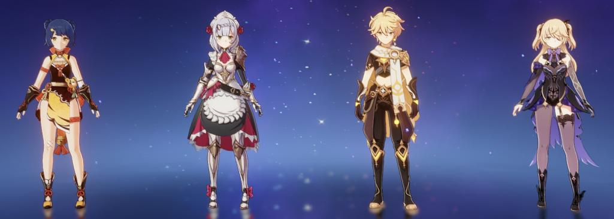
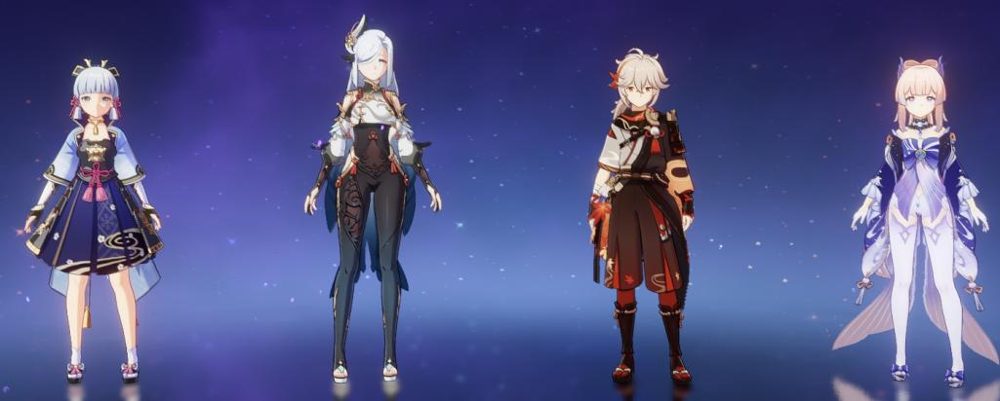
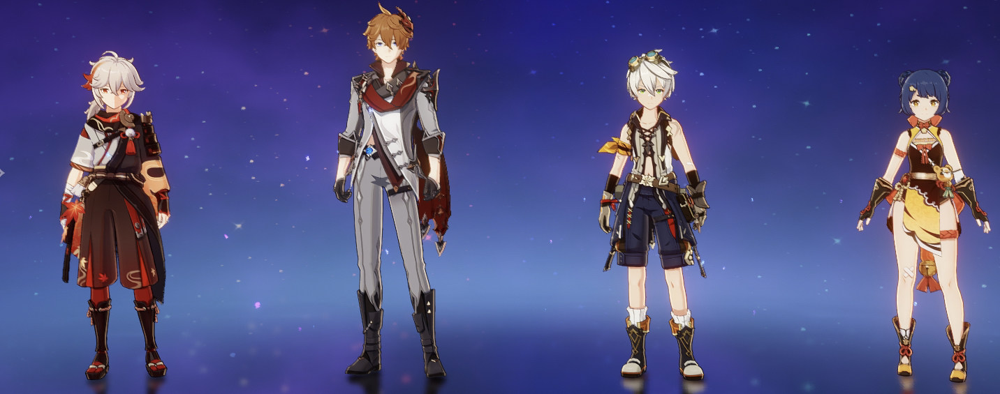
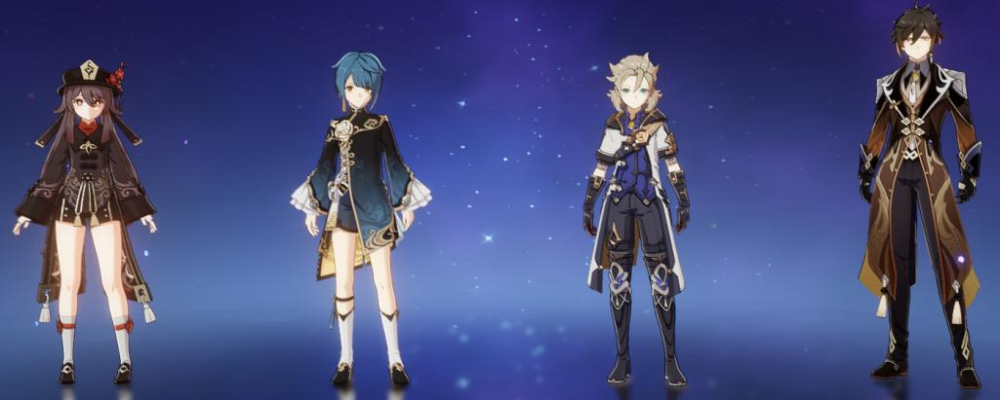
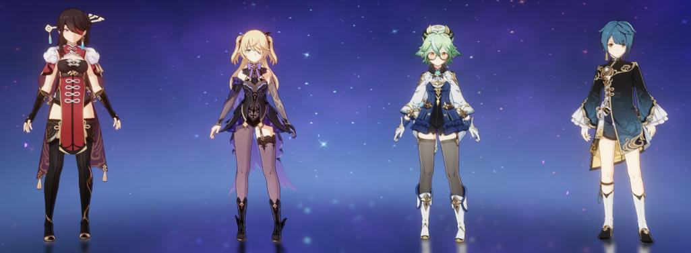
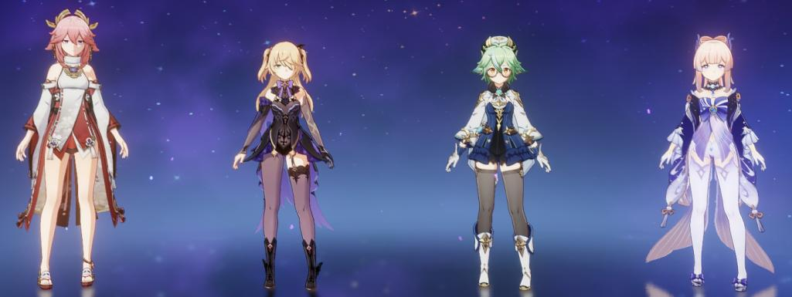

1. The Free-to-Play National Team

The Free-to-Play National Team which, at its core, consists of Xiangling, Xingqiu, Bennett, and Chongyun.
The fourth slot
(Chongyun's Slot) is flexible, therefore, other characters may be used as an alternative for him.
It's a well-known team because it's members deal sufficient damage,
work well with each other, and are easily acquirable.
2. The Jawbreaker Team
The Team consists of Noelle, Xiangling, Fischl, and Geo Traveller. The team is good during the ‘early game’.
is the team’s main DPS, however, she will be mainly focused in dealing sustained DPS.
The Geo Traveller’s role is to provide particles for Noelle so she can use her burst more often. Meanwhile, Xiangling and
Fischl will serve
as a sub DPS by dealing off-field damage and overload reactions.
3. The National Team - Raiden Variant

The team consists of Raiden Shogun, Xiangling, Xingqiu, and Bennett. The team is very reliant on their elemental bursts.
Raiden can act as the sub DPS while providing energy for the entire team. This allows Xiangling, Xingqiu, and Bennett
to constantly use their elemental bursts. Additionally, Raiden's elemental skill provides buffs to each characters' elemental burst.
4. Ayaka Freeze Team

The team consists of Ayaka, Shenhe, Kokomi, and Kazuha. The DPS of the team comes from Ayaka
whilst the rest of the party members buffs Ayaka's personal damage. Majority of the time, Ayaka is running the blizzard strayer artifact set
which provides 15% cryo damage bonus and 40% additional crit rate when frozen. Shenhe and Kazuha provides massive damage buffs
and help recharge Ayaka's elemental burst while Kokomi heals the team and applies hydro to activate the freeze. That's why it's called a Freeze Comp.
5. International Childe Team

The team consists of Childe, Xiangling, Kazuha, and Bennett.
The main DPS of the team actually comes from Xiangling's elemental burst.
Bennett and Kazuha provides buffs for the team while Childe
applies Hydro and does some damage as well.
Bennett acts as the battery for Xiangling by giving her particles in order
to cast her elemental burst.
6. Double Geo Hu Tao Team

This team consists of Hu Tao, Xingqiu, Albedo, and Zhongli.
The main DPS of the team is Hu Tao. Albedo acts as a buffer with his
elemental burst
by providing elemental mastery which increases Hu Tao's
vaporize while acting as a sub DPS with the damage
from his elemental skill
off-field. Zhongli acts as a shielder but can also buff with his elemental
skill using the tenacity of millelith artifact set.
Additionally, his shield
decreases elemental resistance and physical resistance of opponents by 20%.
When Zhongli and Albedo are paired together they activate the elemental resonance
enduring rock which increases shield strength by 15%. Additionally, characters that
are
protected by the shield get an increase in their damage by 15%. Dealing damage
to enemies will decrease their geo resistance by 20% for 15 seconds.
Xingqiu applies hydro
and deals damage off-field to enemies which allows Hu Tao to vaporize her attacks.
7. Taser Team

This team is relatively cheap because it only requires
4-Stars but you could use 5-Stars
for better damage. Beidou does massive amounts
of electro damage while fischl acts as
a battery while also acting as a sub DPS. Xingqiu applies
hydro which allows the electro
charged reaction to proc which also contri
butes to the damage of the team.
Sucrose buffs the team by continuously adding elemental mastery and swirling the elements.
8. Tapu Koko

This team is the expensive version of the Taser Team. Yae Miko and Fischl both do
electro
damage off-field. Kokomi applies Hydro,
heals the team, and also does a bit
of damage.
Lastly, Sucrose buffs the team by adding elemental mastery and swirling
the elements.
Reminder: These are just some recommendations that have cleared content within the game There are plenty of other team comps that are just as good or even better than the teams we've mentioned. If we are to mention all team comps the list would be too long, that's why we only mentioned a few. You may substitute some of the characters with other characters if you do not have a specific character. This doesn't mean that the team will not perform as well as it should. This characters are just the most used currently in their respective teams.